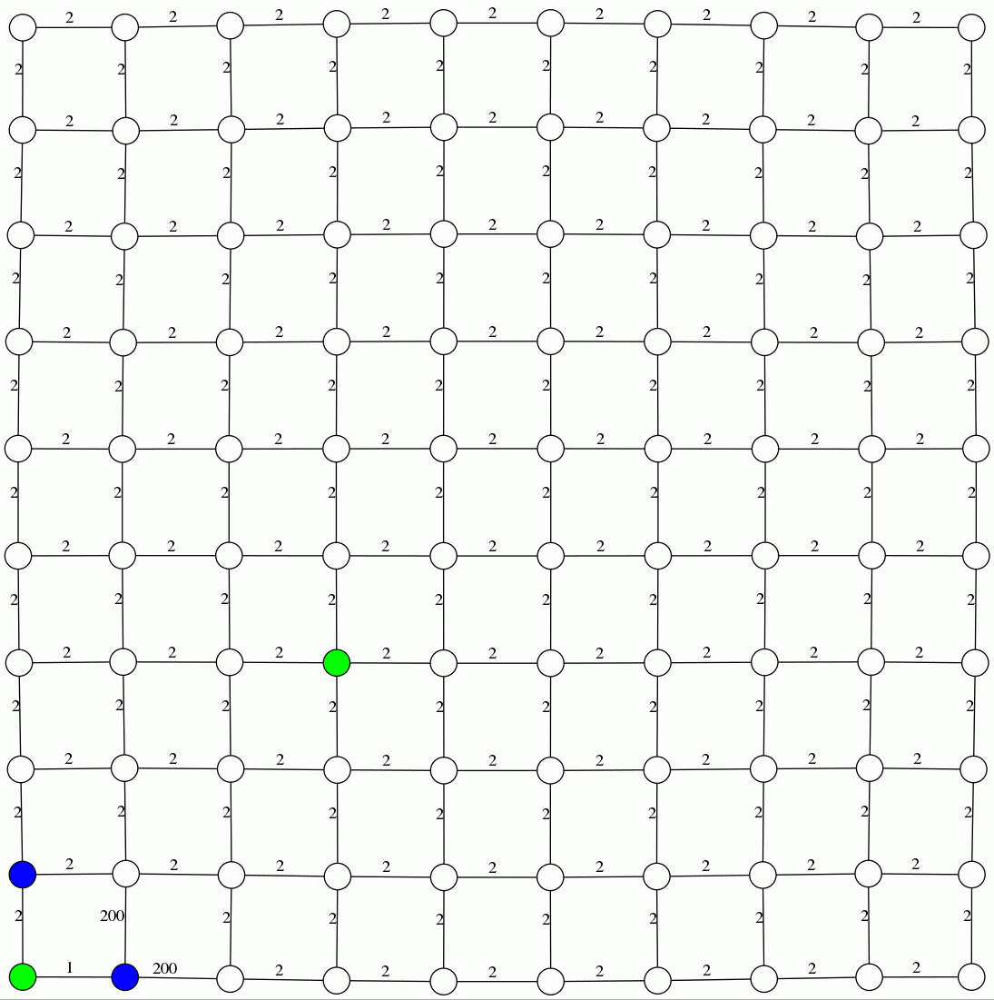
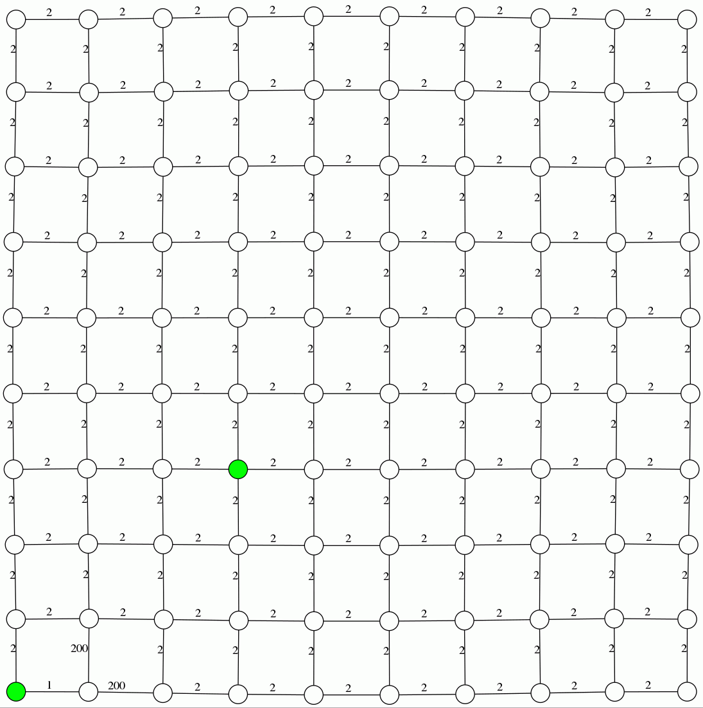

Djikstra Search
Explanation: In each iteration, it finds the currently seen but untraversed vertex that minimizes, f(n)
where f(n) gives the distance of n from source vertex
|
A* Search
Explanation: In each iteration, it finds the currently seen but untraversed vertex that minimizes, f(n) + h(n)
where f(n) and h(n) give the distance of n from source vertex and estimated distance of n to terminal vertex
|
Greedy BFS
Explanation: In each iteration, it finds the currently seen but untraversed vertex that minimizes, h(n)
where h(n) gives the estimated distance of n to terminal vertex
|